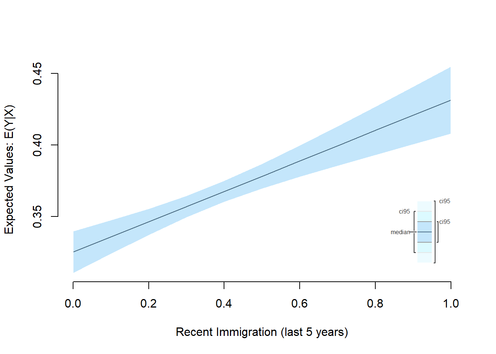

Lab 2 – Solutions
Philipp Broniecki and Lucas Leemann – Machine Learning 1K
rm(list=ls())
library(texreg)
library(Zelig)
library(dplyr)
# read in various datasets and combine them
communities <- read.csv("./data/communities.csv")
communities_employment <- read.csv("http://uclspp.github.io/PUBLG100/data/communities_employment.csv")
communities_immigration <- read.csv("http://uclspp.github.io/PUBLG100/data/communities_immig.csv")communities <- merge(communities, communities_employment, by = c("state", "communityname"))
communities <- merge(communities, communities_immigration, by = c("state", "communityname"))## ------------------------------------------------------------------------
communities <- select(communities,
state,
Community = communityname,
UnemploymentRate = PctUnemployed.y,
NoHighSchool = PctNotHSGrad,
White = racePctWhite,
RecentImmigration5 = PctImmigRec5)
## ------------------------------------------------------------------------
model_immigration <- lm(UnemploymentRate ~ RecentImmigration5, data = communities)
summary(model_immigration)##
## Call:
## lm(formula = UnemploymentRate ~ RecentImmigration5, data = communities)
##
## Residuals:
## Min 1Q Median 3Q Max
## -0.3772 -0.1461 -0.0397 0.1128 0.6746
##
## Coefficients:
## Estimate Std. Error t value Pr(>|t|)
## (Intercept) 0.325347 0.008917 36.488 < 2e-16 ***
## RecentImmigration5 0.105882 0.021344 4.961 7.62e-07 ***
## ---
## Signif. codes: 0 '***' 0.001 '**' 0.01 '*' 0.05 '.' 0.1 ' ' 1
##
## Residual standard error: 0.201 on 1992 degrees of freedom
## Multiple R-squared: 0.0122, Adjusted R-squared: 0.01171
## F-statistic: 24.61 on 1 and 1992 DF, p-value: 7.621e-07## ------------------------------------------------------------------------
plot(communities$RecentImmigration5, communities$UnemploymentRate,
xlab = "Recent Immigration",
ylab = "Unemployment Rate")
abline(model_immigration, col = "red")
## ------------------------------------------------------------------------
model_education <- lm(UnemploymentRate ~ NoHighSchool, data = communities)
communities$Minority <- 1 - communities$White
model_minority <- lm(UnemploymentRate ~ Minority, data = communities)
screenreg(list(model_education, model_minority, model_immigration))##
## =========================================================
## Model 1 Model 2 Model 3
## ---------------------------------------------------------
## (Intercept) 0.08 *** 0.26 *** 0.33 ***
## (0.01) (0.01) (0.01)
## NoHighSchool 0.74 ***
## (0.01)
## Minority 0.43 ***
## (0.02)
## RecentImmigration5 0.11 ***
## (0.02)
## ---------------------------------------------------------
## R^2 0.55 0.27 0.01
## Adj. R^2 0.55 0.27 0.01
## Num. obs. 1994 1994 1994
## RMSE 0.14 0.17 0.20
## =========================================================
## *** p < 0.001, ** p < 0.01, * p < 0.05## ------------------------------------------------------------------------
htmlreg(list(model_education, model_minority, model_immigration), file = "solutions_Lab2_model_comparison.doc")## The table was written to the file 'solutions_Lab2_model_comparison.doc'.## ------------------------------------------------------------------------
z.out <- zelig(UnemploymentRate ~ RecentImmigration5, data = communities, model = "ls")## How to cite this model in Zelig:
## R Core Team. 2007.
## ls: Least Squares Regression for Continuous Dependent Variables
## in Christine Choirat, Christopher Gandrud, James Honaker, Kosuke Imai, Gary King, and Olivia Lau,
## "Zelig: Everyone's Statistical Software," http://zeligproject.org/x.out <- setx(z.out, RecentImmigration5 = seq(0, 1, 0.1))
s.out <- sim(z.out, x = x.out, n=10000)
ci.plot(s.out, xlab = "Recent Immigration (last 5 years)", ci = 95)